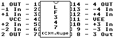

Previous
Next
TOC
LF347 - Wide Bandwidth Quad JFET Input Operational Amplifiers

General Description
The LF147 is a low cost, high speed quad JFET input operational am-
plifier with an internally trimmed input offset voltage (BI-FET II
technology). The device requires a low supply current and yet main-
tains a large gain bandwidth product and a fast slew rate. In addi-
tion, well matched high voltage JFET input devices provide very low
input bias and offset currents. The LF147 is pin compatible with
the standard LM148. This feature allows designers to immediately
upgrade the overall performance of existing LF148 and LM124 designs.
The LF147 may be used in applications such as high speed integrators,
fast D/A converters, sample-and-hold circuits and many other circuits
requiring low input offset voltage, low input bias current, high
input impedance, high slew rate and wide bandwidth. The device has
low noise and offset voltage drift.
Features
Internally trimmed offset voltage:
5 mV max
Low input bias current: 50 pA
Low input noise current: 0.01 pA
Wide gain bandwidth: 4 MHz
High slew rate: 13 V/us
Low supply current: 7.2 mA
High input impedance: 10 hoch 12 Ohm
Low total harmonic distortion Av=10, <0.02% Rl=10k, Vo=20Vp-p and
BW=20Hz-20KHz
Low 1/f noise corner: 50 Hz
Fast settling time to 0.01%:2us
Kapitel LF347 - Wide Bandwidth Quad JFET Input Op. Amplifiers